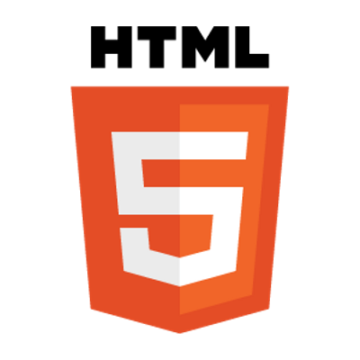
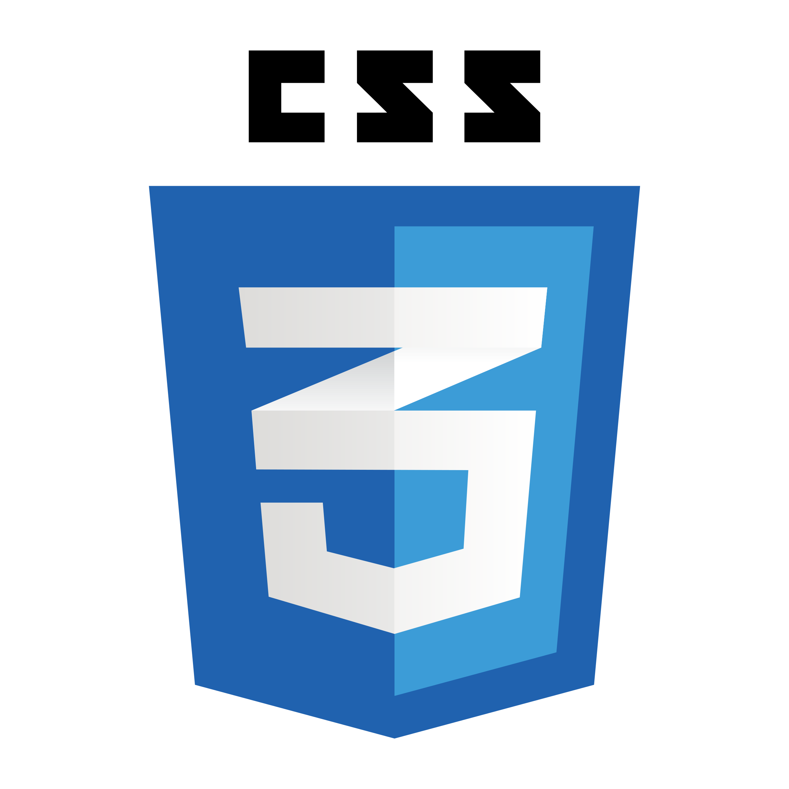
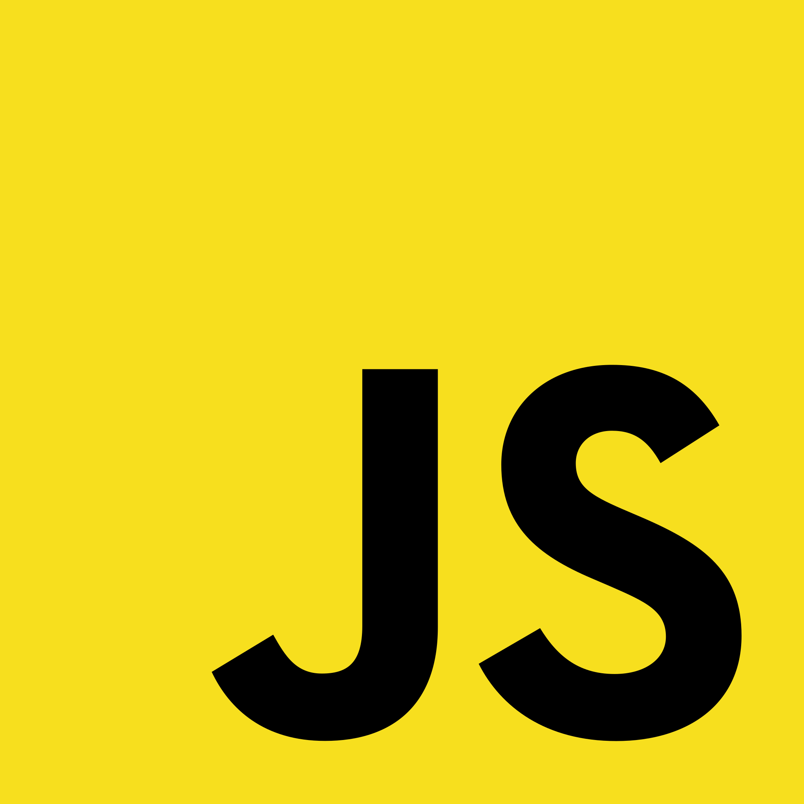
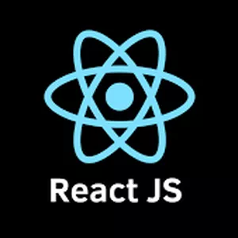
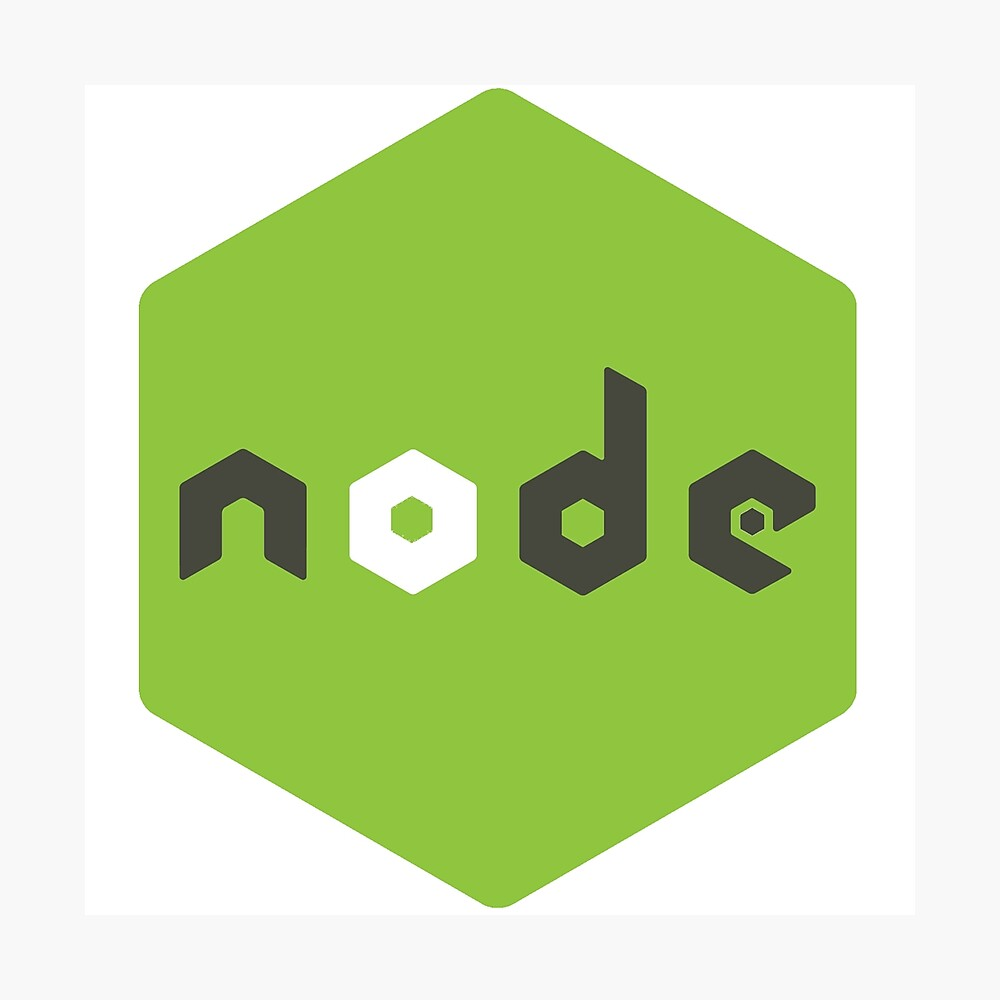
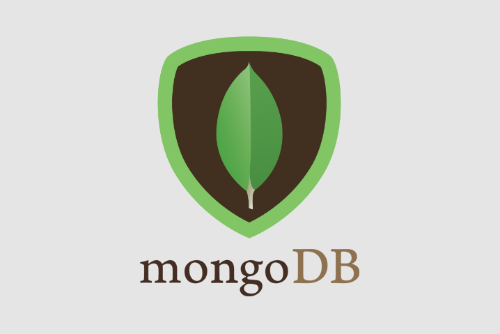
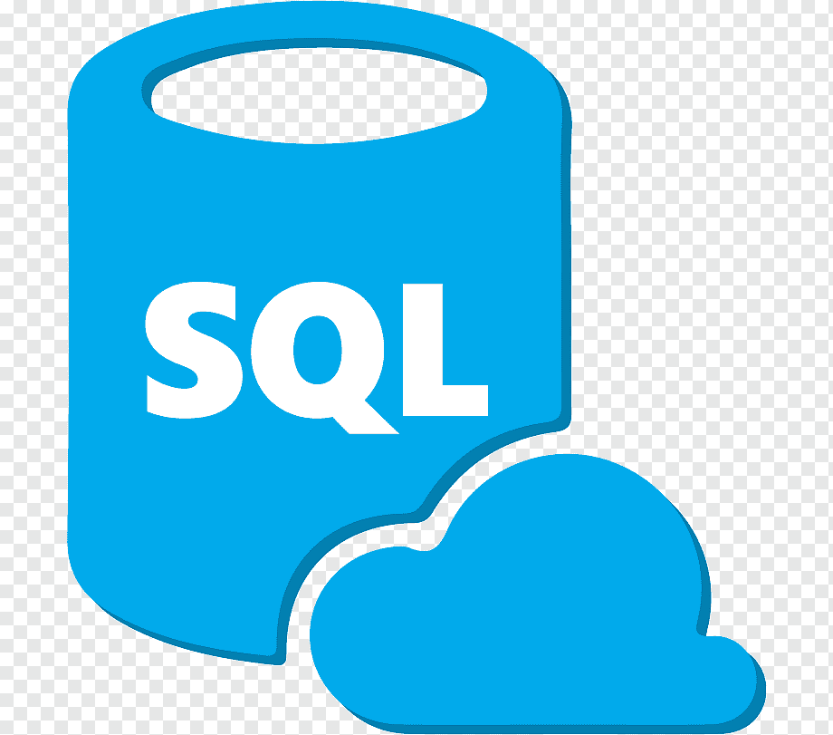
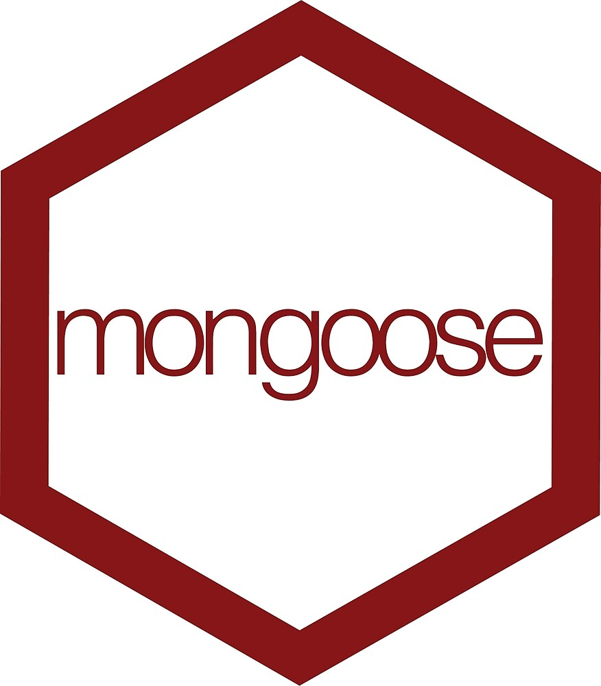
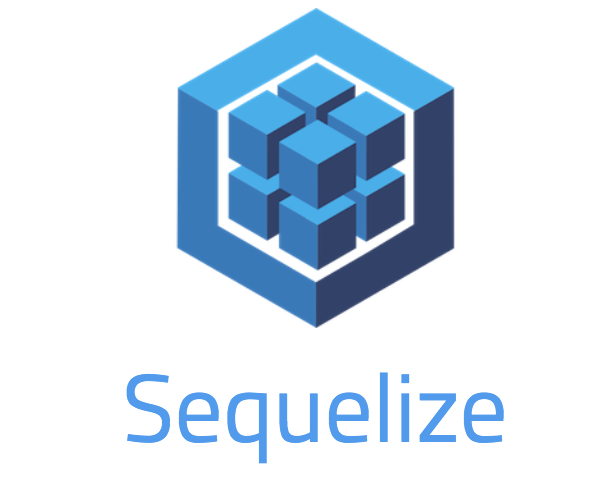
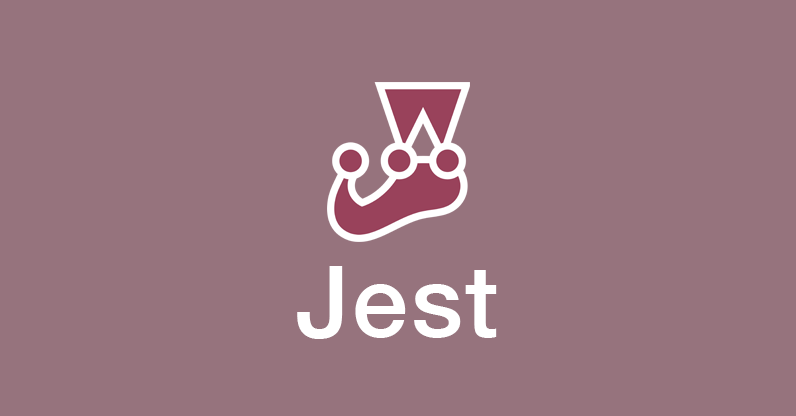
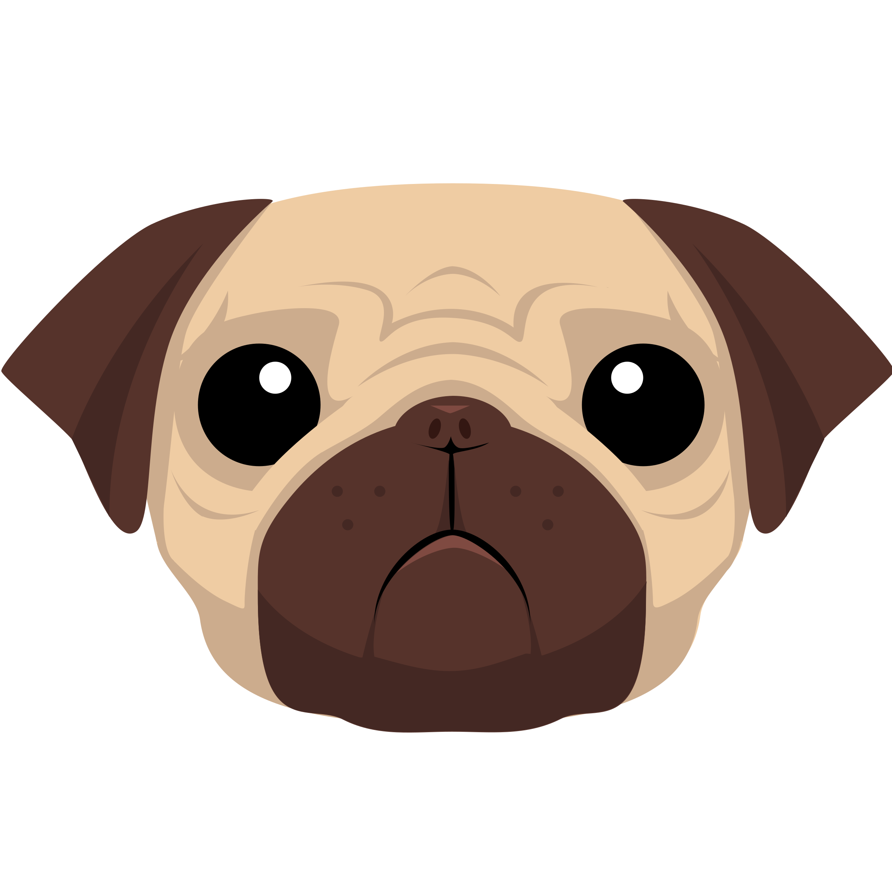
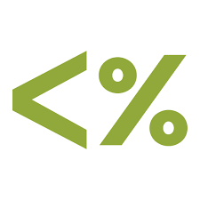
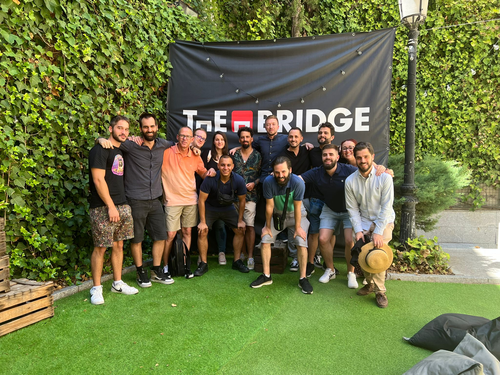
Un Bootcamp es una modalidad de enseñanza que nació en EEUU ante la alta demanda de
personal
cualificado en el sector tecnológico. Se trata de formar intensivamente durante cuatro
meses a los alumnos
para que salgan manejando las tecnologías más demandadas del sector.
Mi experiencia,
personalmente,
no pudo ser mejor. Fueron cuatro meses con una intensidad abrumadora, pero que dieron forma a otra
persona, alguien con habilidades y conocimientos en programación que antes eran casi desconocidos
para
mi.
Hice el bootcamp de Fullstack developer en The
Bridge, uno de los bootcamps tecnológicos más prestigiosos
de España, aprendiendo HTML, CSS, JavaScript, Node.js, Express, MongoDB, PLSQL, React,
Firebase,
etc.
Pero también formaron a alguien preparado para el día a día en cualquier empresa, trabajando en
equipo y con distintas ramas como UIX, Marketing, Data Science o Ciberseguridad.
{ ? } import
from
"Philosophy"
Si bien mis estudios previos a la programación no están relacionados con esta, el haber
cursado la
carrera de Filosofía, así como dos másteres, me han convertido en una persona reflexiva y analítica.
Esta capacidad de analizar, sin duda, es un elemento principal a la hora de localizar y
resolver
problemas tanto en el código como, sobre todo, a gestionar la frustración y persistir
hasta que se
resuelvan los problemas. Porque sé que siempre se llega a algún sitio con trabajo, control, análisis
e
insistencia.
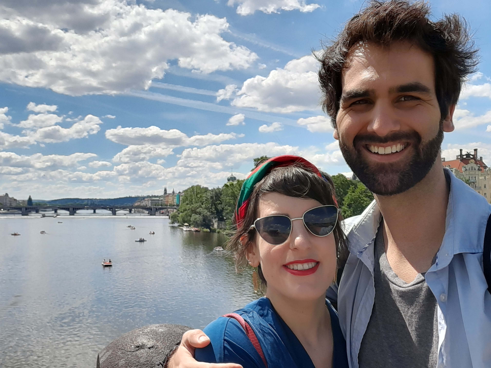
Nacido en Tenerife, pero residiendo en Madrid desde hace siete años, me he enamorado de esta ciudad, de sus
oportunidades y agenda.
En mi tiempo libre me gusta pasar tiempo estudiando guitarra, estar con mi
pareja, Sivan, y mi gato y perrita, Gilberto y Olivia.
La programación no es sólo un compromiso
laboral para mi, sino un campo en el que deseo crecer y al que le dedico casi todo el día de estudio y,
porqué no, de disfrute.